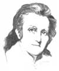
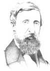
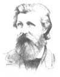
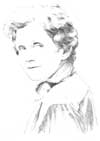

Introducing Our Environmental Hall Of Fame
September/October 1983
"There is a pleasure in the pathless woods,/There is a rapture on the lonely shore,
/ There is society, where none intrudes,/ By the deep sea, and music in its roar:/ I love not Man the less, but Nature more" (Byron)
The first of our long-awaited Environmental Hall of Fame selections ?-based on suggestions from MOTHER 's readers and voted upon by her editors-have been made! By the end of this year, we'll have chosen a total of 7.3 individuals whom we esteem for the work each did to further the protection and preservation of the planet's natural environment. (That's one selection for each year THE Mother Earth News has been published ... and we'll add another honoree each year hereafter.)
Of course, in addition to their appearance in the pages of this magazine, these true firiends of the earth will be honored in commemorative displays that are now being set up at our beautiful Eco- Village. It's a small tribute, indeed, because the good that these men and women have accomplished has benefited us all ... and -under the guardianship of each of us-will continue to serve future generations.
Audubon was born on the island of Haiti, arid was later educated in Paris. There, he studied under David, who was then recognized as the principal French artist of the Revolutionary period. By 1820, while still a student, Audubon began the task that was to consume the rest of his life: imitating nature with brush and paint.
For years, he trekked through the North American wilderness . . . collecting bird specimens and doing field sketches that were later used as a basis for his incredibly detailed illustrations of the various avian species. All in all, Audubon completed an astonishing 1,065 full-sized paintings of North American birds. Those portraits make up his classic, The Birds of America, which was published in four separate volumes between 1827 and 1838. This masterwork was accompanied by Audubon's exceptional Ornithological Biography . . . in which the artist created ''word pictures'' to describe the wilderness settings through which he'd journeyed.
Audubon also dreamed of crossing the American continent on foot in order to catalog the nation's mammals as exhaustively as he had its birds. The product of that effort is The Viviparous Quadrupeds of North America, completed by this great man's sons after his death.
Henry David Thoreau, one of the Transcendental philosophers of Concord, Massachusetts, had a special love for nature . . . and kept journals of his excursions to the Maine woods, the White Mountains, the Catskills, Cape Cod, Canada, and the Upper Mississippi. Ironically, though, his most famous "expedition'' was that to Walden Pond, which was a scant two miles from Concord Center. There he lived in solitude for two years, setting down the notes arid thoughts that make tip the wonderful observations in Walden (published in 1854).
Thoreau's writings introduced a new genre to American literature: the nature essay. A gentle man who cared about the suffering of animals, this New England poet/naturalist was not a sportsman, nor did he collect specimens or hunt. Instead, lie wrote about his intellectual and spiritual relationship to what he saw. He was also a staunch individualist who sought self-sufficiency, a simpler lifestyle, and a harmonious coexistence with nature.
In 1868, John Muir arrived in California (after walking through the Midwest!). There, in the wilderness of the Yosemite Valley, he spent six years studying, writing journals, and making sketches of what he saw. Following that adventure, this rugged naturalist went on to explore Nevada, Utah, the Northwest and Alaska.
Glaciers and forests -re two of Muir's chief interests, and his research uncovered 65 glaciers in the Sierra . . . supporting the then-unproven theory that its ranges were formed by ice and not by the surrounding earth's collapse. Subsequently, Muir was largely responsible for the development of Yosemite National Park in 1890. He also founded the Sierra Club and-as its first president-lobbied actively for 22 years for the passage of conservation laws.
John Muir became the most notable turn-of-the-century spokesman for the wilderness. Unlike most of his contemporaries-who felt nature was a menace to be subdued-Muir found supreme value in the untouched world's capacity to serve as a teacher and a spiritual force. In his books on wilderness living, his hardships are colored by adventure and his adventures exalted by spiritual communion,
"Teddy" Roosevelt is often credited with being the first national political figure to bring the issue of conservation to the attention of the American public. Acting on his concerns for the efficient, economical use of natural resources and for wilderness preservation, Roosevelt established the federal Bureau of Land Reclamation . . . had the Grand Canyon designated as one of 16 national parks . . and added some 194 mil lion acres to this country's system of forest preserves.
Furthermore, this President's conservation policies were motivated by his own love for wilderness recreation. Teddy was an enthusiastic field naturalist (as well as an avid bird-watcher) and was recognized by a number of his contemporaries as one of the authorities of the day on nature studies. Also, although he opposed the wholesale slaughter of wild creatures by commercial hunters, he considered hunting for sport or food-on an individual level-to be an integral part of the wide range of worthwhile wilderness activities. Because Roosevelt was, in addition to all of this, a talented and prolific writer on wilderness themes, his lively reports of his own expeditions must have given many city-bound Americans of that time their first hint of the beauty and grandeur of the great outdoors.
As a marine biologist, Rachel Carson combined her sense of nature's poetry with scientific observations of minute life-forms and the interface of ocean and shore to make these things come alive for us in Under the Sea- Wind (1941), The Sea Around Us (1951), and The Edge of the Sea (1955).
In her most famous work, Silent Spring (1962), Carson turned her incisive eye to humanity's impact on the world. This study resulted in a powerful and terrifying statement about the unconsidered effects of a greedy and irresponsible industrial society. As she pointed out all too clearly, pesticides were already threatening our water, soil, and air while food additives and toxic chemicals were endangering our own and many other species. By vividly revealing the degree of contamination on our planet, Rachel Carson opened America's mind to ecological awareness and gave rise to the modern environmental movement.
|
 JOHN JAMES AUDUBON American Artist and Ornithologist (1785-1851) |
 HENRY DAVID THOREAU American Writer and Naturalist (1817-1862) |
 JOHN MUIR Geologist, Explorer, and Naturalist (1838-1914) |
 THEODORE ROOSEVELT 26th President of the United States (1858-1919) |
 RACHEL CARSON Scientist and Author (1907-1964) |
|